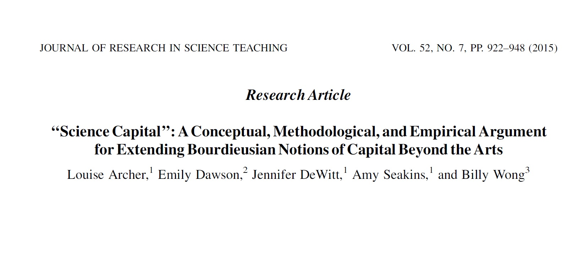

Science Capital

Science related forms of social and cultural capital.
- E.g., Knowing a scientist, engaging with science related media etc.
The Current Study
Student data from the University of Auckland physics department (>10000 students, 2009-2015).
Network Analysis - Comparing tranverse/vertical movements between female and male students.
Quantitative findings placed in broader socio-cultural context using Bourdieu + Science Capital.